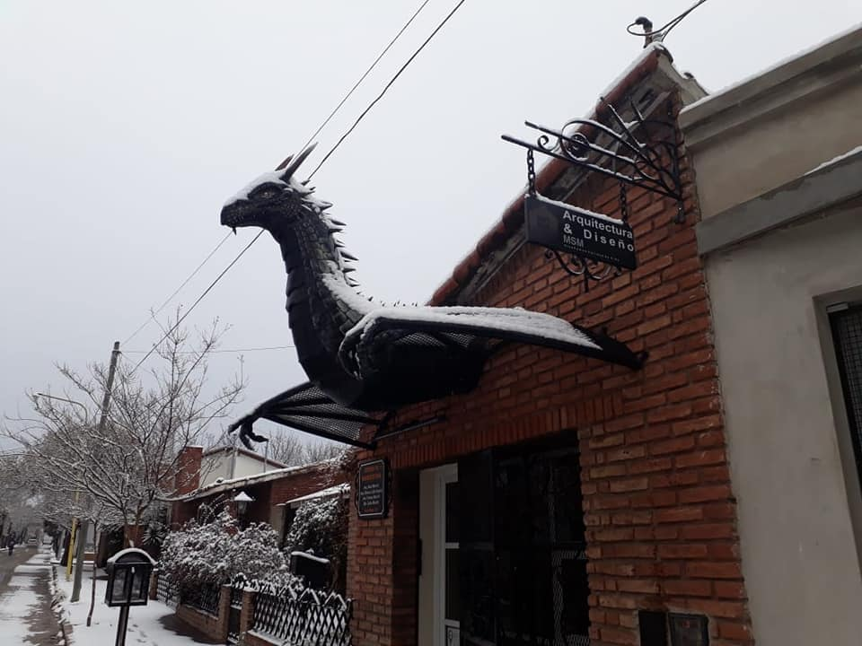
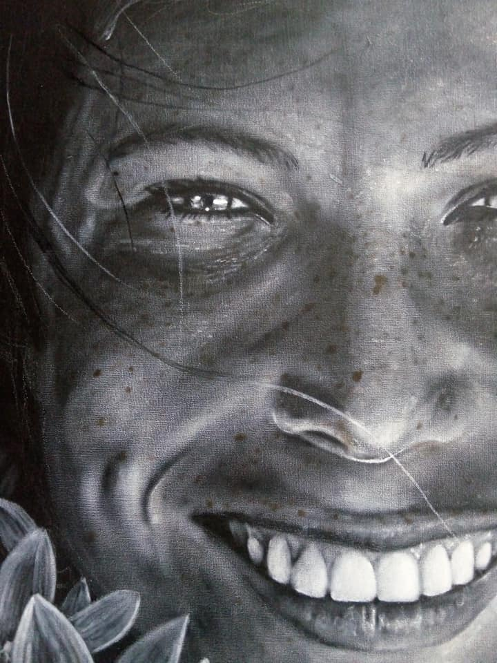
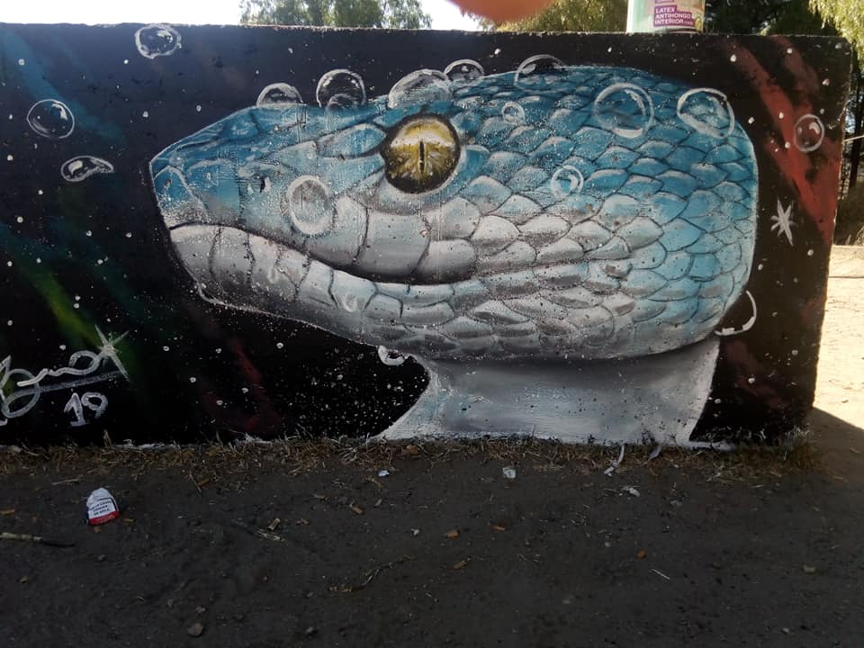

BRUNO MARCHI ARTISTA
Bienvenidos amigos! Me presento soy Bruno Marchi con gran trayectoria en el arte, soy escultor, muralista, pintor y tatudor
Esculturas
Dragon de hierro, realizado en el 2020 y ubicado en Capilla del Monte/Cordoba, Argentina.
Cuadros
Mujer con deslumbrante sonrisa, pintura realizada en el año 2019 al Oleo
Murales
Mural de serpente, del año 2019. ubicada en Capilla del Monte/Cordoba, Argentina